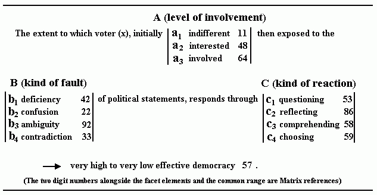
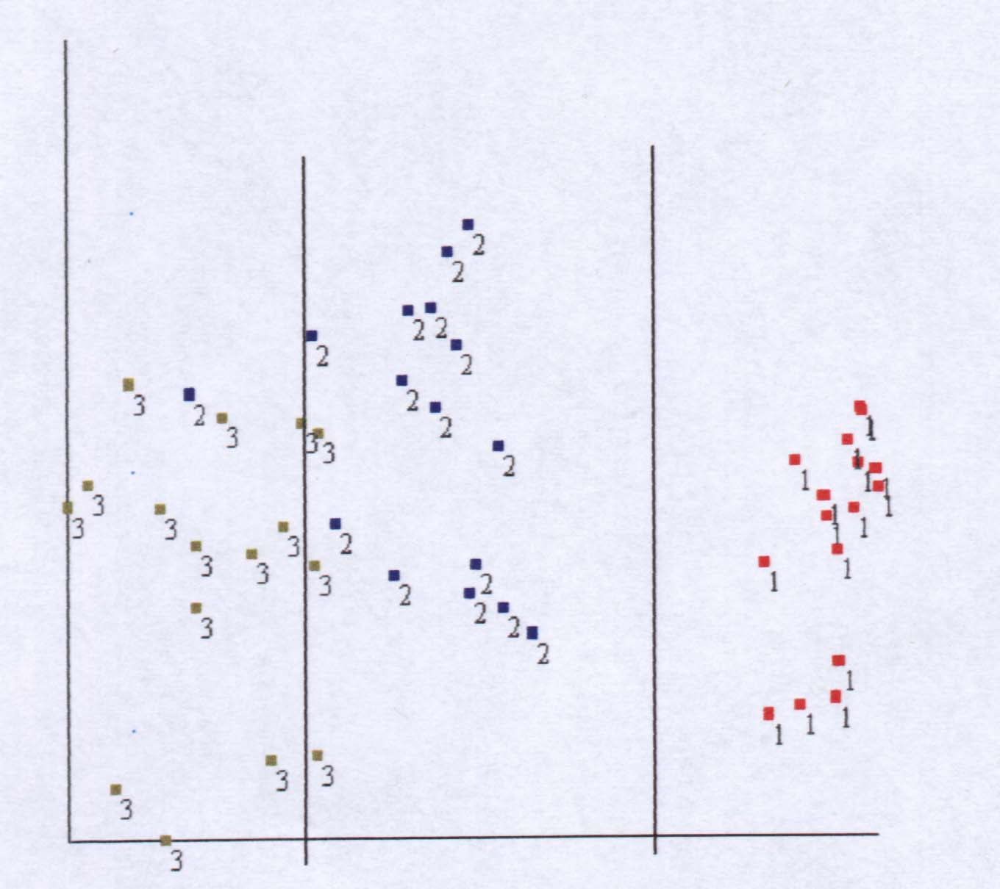
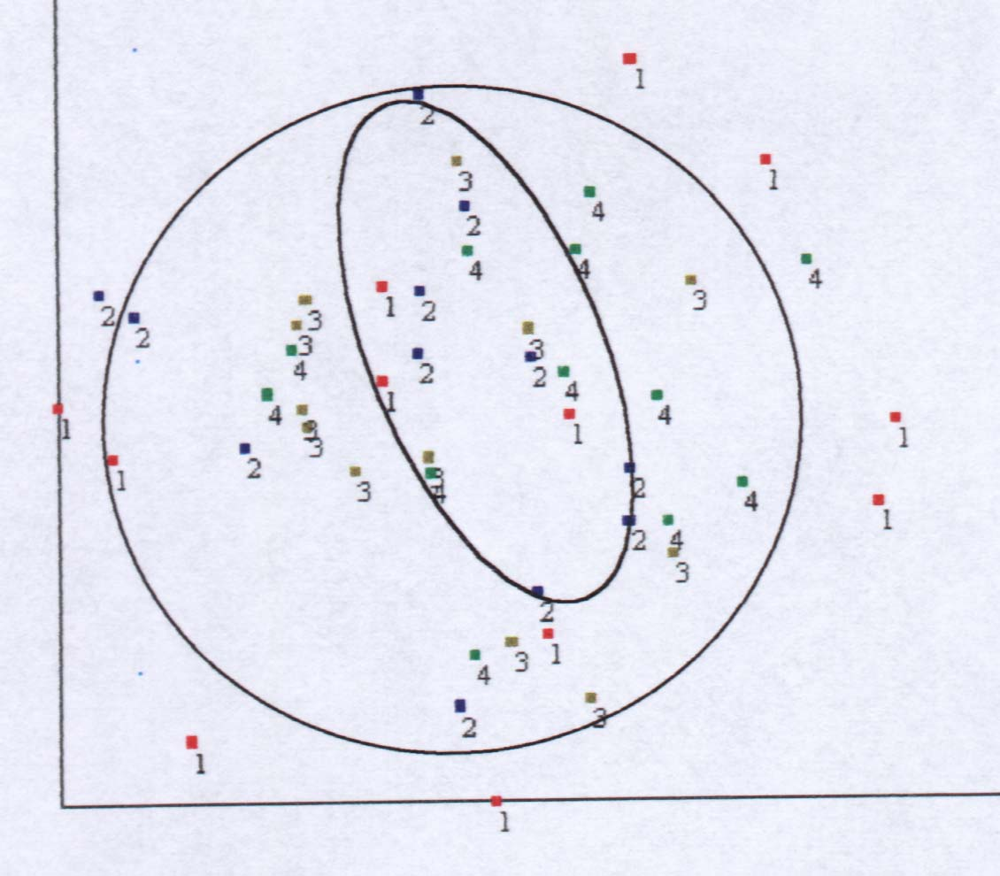
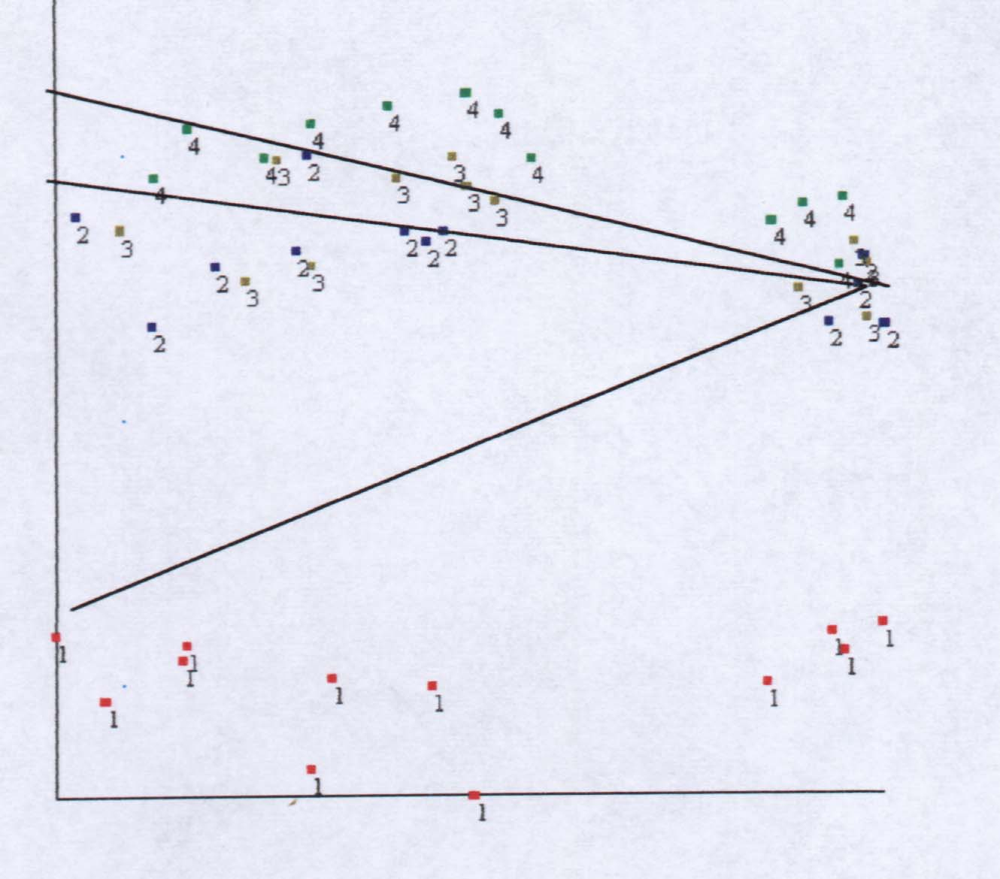

THE QUALITY OF DEMOCRACY
A Facet Approach with Holistic Support
Ben Bayer (Australia) and Gil Goldzweig (Israel)
Abstract. The paper proposes to examine a
combined, integrated design approach in which holistic support is provided
to the well-established facet approach, to help optimize its potential.
The paper will demonstrate the application of the combined
approach to the broad and somewhat open-ended concept of “Democracy”.
Concept analysis of Democracy by the integrated approach
yielded a three faceted mapping sentence targeting the common range of
“Effective Democracy”.
The paper reports empirical results of a cross-cultural
research survey that was based on the proposed mapping sentence.
The survey was designed to assess levels of effective democracy through
voters responses to a range of varied political statements. The work
is seen as a pilot study with further ground yet to be covered.
1. Introduction
A recently published overview of Facet Theory by Guttman and Greenbaum
(Guttman & Greenbaum,1998), establishes Facet Theory as a unique systematic
approach towards theory construction, research design and data
analysis. . These fundamentals provide the basis of the main approach in
this paper.
The innovative approach involves the support of the Matrix as a useful
visual display tool, particularly at the important stages of Mapping Sentence
design. The Matrix was introduced at the 1991 FT Conference in Jerusalem
and can be described as a holistic framework or, in more focused terms,
as a landscape of values and entities.
The selected area of study is Democracy, a quality element in national
social political processes.
2. Towards a Mapping Sentence
Scientific research starts with definitions. Scientific definitions
are not a description of any reality but rather are arbitrarily specified
by the scientist. The ultimate test of a scientific definition is associated
with its purpose: to facilitate the formulation of scientific laws and
theories (Shye & Elizur, 1994).
The formulation of definitions for scientific research in the social
sciences confronts the scientist with a complex problem. The social scientist
usually starts his research from concepts that are well known and well
used in natural language (like intelligence, values etc.). The problem
presented to the social scientist is to define the concepts scientifically
(i.e. as the basis for formulating scientific laws) while retaining some
of the original connotations or “flavor” of the concept.
In this paper we want to give an example of conceptual analysis based
on a combined FT and holistic approach. Such conceptualization may lead
to significant empirical findings.
In our example we will analyze and define the concept of democracy.
The kind of definition developed within the FT and called “mapping
definition” is a definition of a concept in terms of the system of observations
that enable its measurement. The specification of the relevant observational
items is done in terms of their domain and their range.
The “heart” of the mapping sentence is the Common Range. In order to
have a common range, a set of items have to be ordered from high to low
towards the same meaning. The first step in defining democracy was to set
the common range of this open ended concept.
An analysis of the concept revealed a basic feature of the democratic
process: the interaction between the voter and the politicians, interaction
that reaches firm expression on Election Day. In effective democracy the
voters react towards political statements by modulating their initial opinions
towards a constructive vote. In the case of less effective democracy the
voters will be correspondingly less constructive.
This first analysis yielded the following mapping definition:
An item belongs to the universe of “effective democracy” items if and only if its domain is asking about reactions towards faults in political statements and its range is ordered from high to low towards the reaction.3. The Mapping Sentence
This mapping definition was the basis for the following mapping sentence:
The mapping sentence consists of three facets:
Projected on the Matrix, the elements of the mapping sentence and those
of facet C display a broad comprehensive spread and a coherent pattern
of relationships, lending reinforcement to credibility.
It is also interesting to note here that in a mapping sentence defining
the “quality of life” (Shye, 1989), the common range was “effective functioning”.
4. Method
Subjects: 82 subjects, 52 (63.4%) Australians (Adelaide) and
30 (36.6%) Israelis (Jerusalem). There were 60 (75%) women and 20 (25%)
men (two subjects did not mentioned their gender).
The mean age was 35.05 (std=13.54) and the mean of times participating
in general elections was 4.67 (std=4.05).
Tools: The research questionnaire consisted of 48 questions
based on the content profiles derived from the proposed mapping sentence.
For example:
If in the context of the last or coming election you were exposed to a deficiency in a political statement about a subject you are highly involved in, would you:
| 1. question friends or others about it | surely not | very likely not | Possibly | very likely yes | certainly yes | b1a3c1 |
| 2. ask yourself and reflect on the subject | surely not | very likely not | Possibly | very likely yes | certainly yes | b1a3c2 |
| 3. try to clearly comprehend the subject | surely not | very likely not | Possibly | very likely yes | certainly yes | b1a3c3 |
| 4. make a considered choice when voting | surely not | very likely not | Possibly | very likely yes | certainly yes | b1a3c4 |
Procedure: the subjects were told that they were going to be asked questions about their reactions to various kinds of political statements. They were invited to state their reactions while encountering the described kinds of political statements during the context of the last or coming elections. If the subject did not encounter statements like those described, they were invited to give their best guess about their reaction if they had.
5. Results
The data was analyzed by means of WSSA1 procedure of the HUDAP computer
program. In order to increase the goodness of fit of the SSA mapping we
used four dimensional mapping that resulted in a very low coefficient of
alienation (0.085) thus we can conclude that the goodness of fit of the
SSA was very high.
The analysis yielded the following results:
The correlations matrix
First we can note (appendix 1) that the correlation matrix (monotonicity
coefficients) of the 48 questions includes almost no negative correlations,
the few negative correlations that were found were very low. So we can
conclude that our survey questions belong to same unified domain: effective
democracy. We can also note that the research mapping sentence asks
about behavior towards faults in political statements and thus can be viewed
as part of the attitudes domain (L. Guttman & Levy, 1974) and thus
conform to the first law of attitudes.
The Facets
Facet A - level of involvement (diagram 1):
We found a clear differentiation between the facet elements. Facet
A can be thought of as axial facet with an order between its elements –
from indifferent towards highly involved.
It is interesting to note that element 1 (indifferent) was very differentiated
from the other two elements 2,3 (interested, highly involved). Those two
were found to be similar to each other.

| 1 = indifferent | 2 = interested | 3 = highly involved |

| 1 = deficiency | 2 = confusion | 3 = ambiguity | 4 = contradiction |
| DECIDING | PROCESSING | |
| BEING | comprehending | reflecting |
| DOING | choosing | questioning |

| 1 = questioning | 2 = reflecting | 3 = comprehending | 4 = choosing |
A conceptual analysis based on a combination of the FT and holistic approaches made it possible to construct a clear definition of the open ended concept of effective democracy by the reaction of voters towards weaknesses in political statements. The definition was used as a basis for measurement. Analysis of the results showed a concordance between the definitional system and the empirical results, a concordance that may be used as the basis for theory.
7. Conclusion
The paper presents a fruitful integration between FT and the holistic
approach of the Matrix. More remains to be done in the area of the study
itself, like a comparison between the two samples and consideration of
its significance in terms relating to the quality of democracy.
Taking the broader view, this paper is seen as a pilot study testing
new grounds along the track of FT development and exploring opportunities
towards scope and quality enhancement.
8. References
Guttman R. and Greenbaum C. W. (1998). Facet Theory: Its development
and Current Status, European Psychologist, Vol 3 (1), pp. 13-36.
Levy S. and Guttman L. (1974). Values and attitudes of Israeli
high school youth, First research project. Jerusalem, The Israeli institute
of applied social research (Hebrew with English translation of introduction
and summary).
Shye S. (1989). Systemic Life Quality Model: A basis for urban renewal
evaluation. Social Indicators Research, 21, pp. 343-378.
Shye, S. Elizur, D. [with Hoffman, M.] (1994). Introduction to Facet
Theory. Applied Social Research Methods Series, 35, Sage Publications.
9. Three basic displays
The following three displays, among others, were presented at the conference:
(1) THE MAPPING SENTENCE
(2) Mapping Sentence Elements projected on the
Matrix
(3) Facet C Elements projected on the Matrix